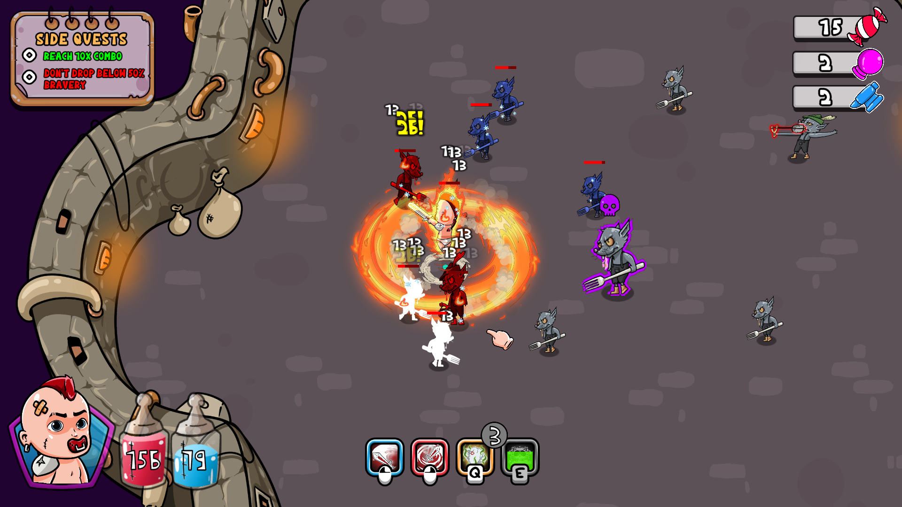
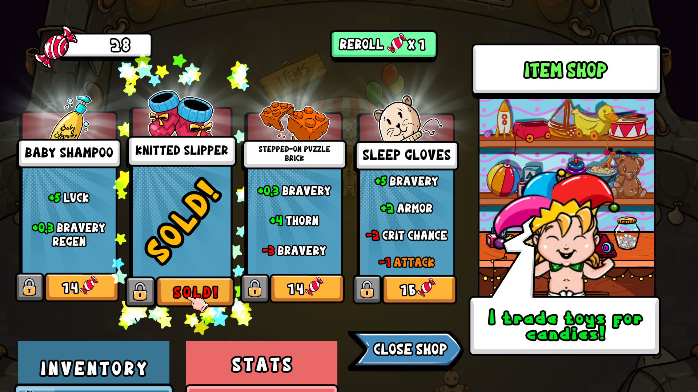
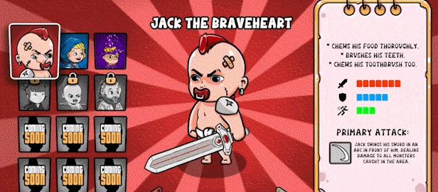
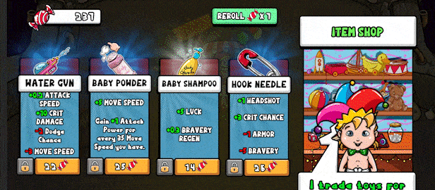
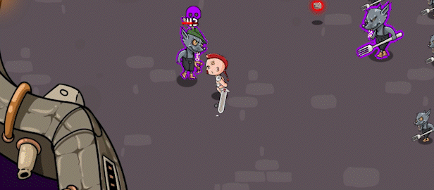
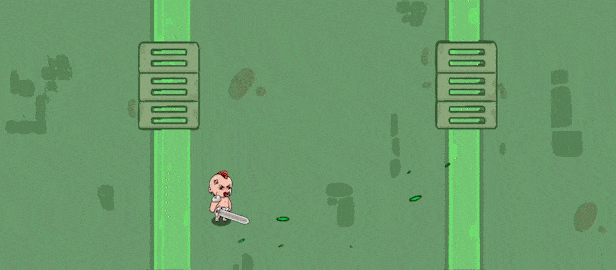

Portfolio
PC Games
I was the sole developer of Babies vs Monsters for Steam. I designed its architecture, wrote its code, and contributed to the game design.


Babies vs Monsters
BvM is a 2D top-down RPG and bullet-heaven game with characters, feats, items, temporary status effects, and hundreds of enemies. Players fight, shop for items, upgrade magical skills, experiment with thousands of character-build combinations, and face a boss at the end of each chapter.
Building many complex systems on a limited production schedule called for a solid data-oriented approach. I created custom inspectors and editors so designers could iterate quickly, and used factory, decorator, and observer patterns to keep the project extensible.
Architecture
The game runs on two sides. Unity handles the frontend with sounds, collisions, and animations, while SceneController on the backend works with a giant, modular central runtime snapshot. Everything is handled through the idea of a first-class action class. Each action grabs what it needs from that snapshot and makes changes. Those changes are checked for reaction loops, bounds, and edge cases, railing the game safely toward its next frame. This way, my designer can come up with any crazy idea or request any change later—all I have to add or change is the specific action.
This way of thinking through the lens of actions might be a happy medium between object-oriented and procedural approaches. I use only one parent abstract class: GameAction. It cannot compete with the performance benefits of a purely data-oriented approach like an ECS, but when design freedom, emergent gameplay, and creative RPG interactions are the primary target, I really felt the flexibility and was quite happy with it.
For the ECS side of things, I wrote my own ECS library for the Odin programming language. You can find it here.
Gameplay



